The Clearance plane is where all transfer motions between retract and engage motion takes place. Typically you would define this plane at a certain safety distance above the part geometry. This is done to prevent the tool from touching the part being machined during transfer motions since these motions usually use a very fast or rapid feed rate.
Refer to the following parameters:
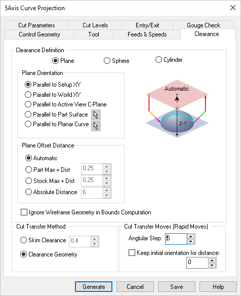 Dialog Box: Clearance tab, similar for 5 Axis Milling Operations |
Setting the Clearance Definition to Plane uses an XY plane wherein all transfer motions between retract and engage motion takes place. This plane is visible on the part geometry and you can set the plane orientation and specify the plane offset distance from the available options.
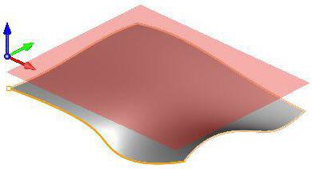 Clearance Definition = Plane |
This is used to set the orientation of the clearance plane. Select from the following options:
Parallel to MCS XY
Orients clearance plane parallel to the defined Setup (Work Coordinate system).
Parallel to World XY
Orients clearance plane parallel to the defined World Coordinate system.
Parallel to Active View CPlane
Orients clearance plane parallel to the active construction plane
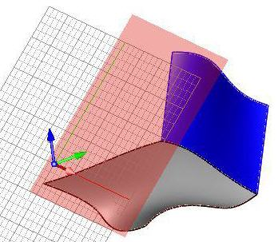 Parallel to Active View CPlane Parallel to Part Surface
 Orients clearance plane parallel to the selected part surface. The surface can be selected by using the Pick option. Orients clearance plane parallel to the selected part surface. The surface can be selected by using the Pick option.
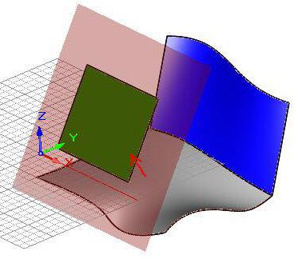 Parallel to Part Surface Parallel to Planar Curve
Orients clearance plane parallel to the selected planar curve. The curve can be selected by using the Pick option.
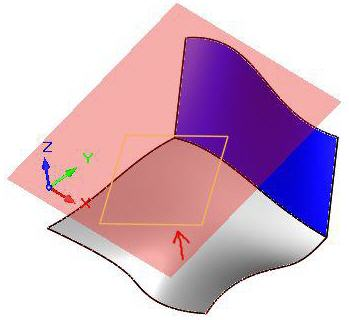 Parallel to Planar Curve |
This allows you to offset the clearance plane in the direction parallel to the specified plane orientation.
Automatic
Allow the system to calculate a the clearance plane height automatically based on the part and stock geometry.
Part Max + Dist
Set the Clearance Plane height to the maximum Z height of the Part plus this added distance.
Stock Max + Dist
Clearance height can be set to distance above the maximum stock height.
Absolute Distance
Select this to specify the absolute Z clearance height Distance to use and then enter Z height value. Be sure that the value you specify clears your part geometry.
|
Ignore Wireframe Geometry in Bounds Computation
Check this box to ignore all wireframe geometry when calculating the Clearance Plane definition. When checked, the Automatic and Part Max options for defining the Clearance will be calculated from actual surface geometry.
|
Selecting clearance definition as Sphere uses a spherical clearance wherein all transfer motions between retract and engage motion takes place. This is visible on the part geometry and you can set the sphere center and radius.
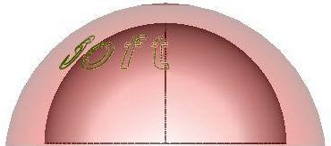 Clearance Definition = Sphere
The sphere Center and Radius can be set using one of the following methods
Automatic
Allow the system to calculate a the clearance cylinder radius automatically based on the part and stock geometry.
Part Max R + Distance
Select this option to use the Part's Maximum R height and then enter a Distance value to add to this for the total R height for the Clearance Sphere.
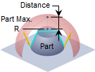 Clearance Sphere
Part Max + R Stock Max Radius R + Distance
Select this option to use the Maximum R height of the Stock plus the specified Distance for total R height of the Clearance Sphere. If stock geometry does not exist, the Maximum R height of the Part geometry is used.
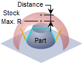 Clearance Sphere
Stock Max+ Dist Absolute Distance
Select Specify and the enter the X,Y and Z center coordinates and Radius value in the fields provided. The Pick button is available to select the sphere center point.
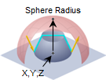 Specify
XYZ Center + Radius |
|
Selecting clearance definition as Cylinder uses a cylindrical clearance wherein all transfer motions between retract and engage motion takes place. This is visible on the part geometry and you can set the cylinder center and radius.
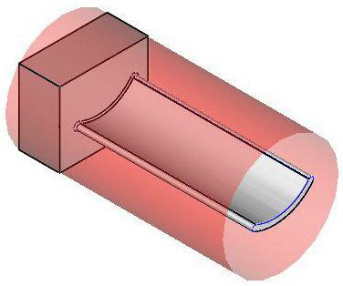 Clearance Definition = Cylinder
The Cylinder Center and Radius can be set using one of the following methods
Allow the system to calculate a the clearance cylinder radius height automatically based on the part and stock geometry.
Part Max R + Distance
Select this option to use the Part's Maximum R height and then enter a Distance value to add to this for the total R height for the Clearance Cylinder.
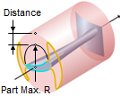 Clearance Cylinder
Part Max R + Distance Stock Max Radius R + Distance
Select this option to use the Stock's Maximum Z height plus the specified Distance for the total R height of the Clearance Cylinder. If stock geometry does not exist, the Maximum R height of the Part geometry is used.
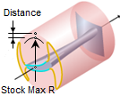 Clearance Cylinder
Stock Max R + Dist Specify
With Clearance Definition set to either Sphere or Cylinder, select this option to Specify the Center X,Y,Z coordinates and Radius. The Pick button is available to select a center point.
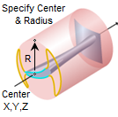 Clearance Cylinder
Specify Center + Radius |
In addition to the Center and Radius, you would also have to specify the Cylinder axis to be along X Y or Z.
|
|
You can also control the transfer motions during cutting.
Skim Clearance
When the cutter has finished cutting in one region and needs to transfer to another region to begin cutting, it can be instructed to move to the clearance plane and then perform the transfer motion to the next cut location.
Clearance Geometry
In the skim motion, the system automatically determines the safe height by taking into consideration the condition of the part and stock model and using this value as the height to perform the transfer motions.
|
Allows you to specify an angle value to be used for Rapid moves in degrees.
Angular Step
The motions on the clearance area are rapid motions and several moves are used to describe the motion around the sphere. The number of moves is based on the Angular Step for rapid moves. A small value like 1 degree would cause some machines to slow down since the rapid moves are usually not smoothly interpolated by CNC machines.
Keep initial orientation for distance
When this option is checked the tool keeps its initial (tool axis controlled) orientation while approaching and entering the clearance area. This orientation will be kept until the specified distance from the clearance plane.
|